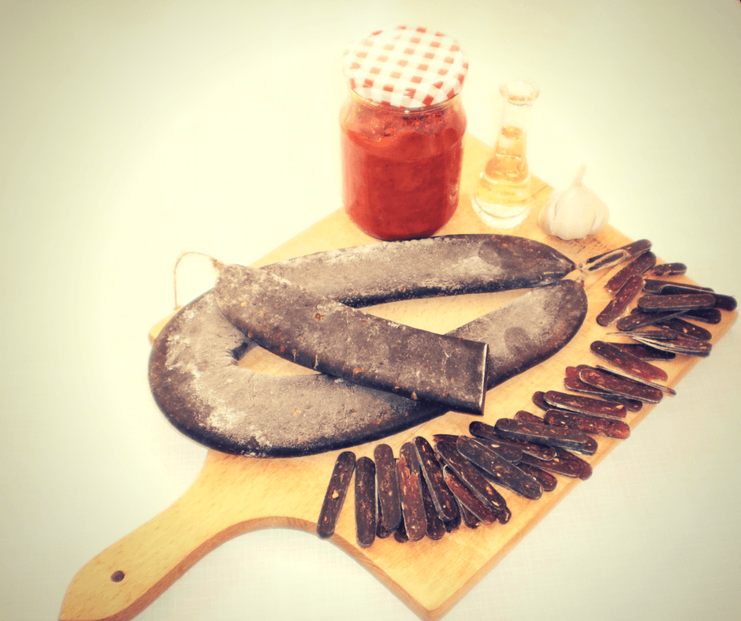
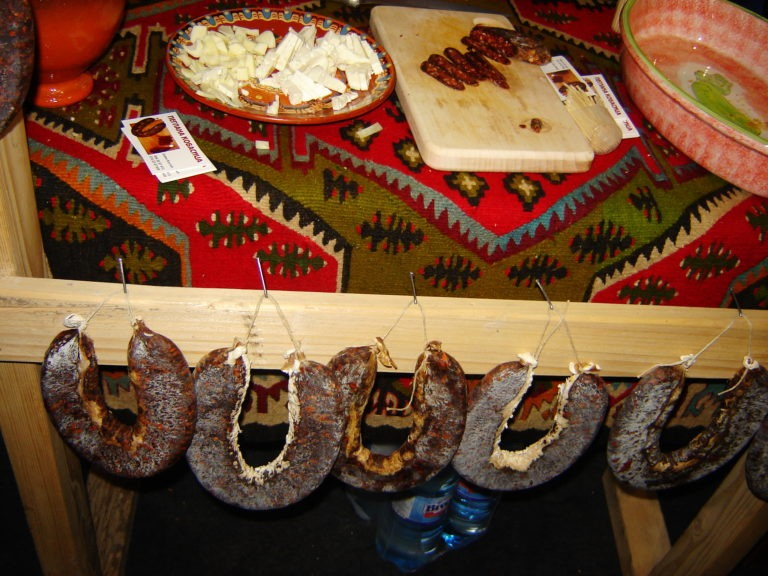
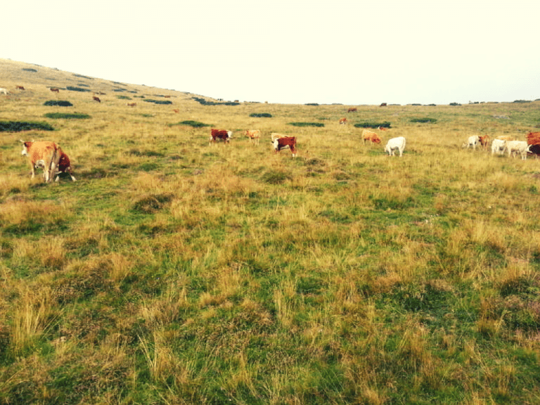

Pirotska peglana kobasica je mnogo više od prehrambenog proizvoda – ona je nesvakidašnji specijalitet pirotskog kraja, deo lokalnog identiteta, ponos Piroćanaca. Kao što je ajvar simbol Leskovca, kupus Futoga, malina Arilja, pršuta Zlatibora, a sir obeležje Sjenice, tako je peglana kobasica simbol Pirota. Rame uz rame sa kačkavaljem i ćilimom, ovaj specijalitet definiše grad Pirot. I ako malo bolje razmislimo, videćemo da svaki od njih predstavlja proizvod veštine, strpljenja, tradicije i majstorskog umeća prenošenog sa kolena na koleno. O pirotskoj peglanoj kobasici donedavno ni sam nisam mnogo znao, niti sam je probao. Osim geografskog porekla i izgleda nisam imao predstavu kakvog je ukusa, niti kako se i od čega tačno priprema. Međutim, to se promenilo zahvaljujući Danilu Peniću, mom prijatelju i kolegi sa fakulteta. Radoznao da saznam nešto više o pirotskoj peglanoj kobasici, kontaktirao sam Danila koji ne samo što je rodom iz Pirota, već se u njegovom domaćinstvu i proizvodi ovaj specijalitet. Uz to, Danilo se bavi istraživanjem mikrobioloških procesa koji se odvijaju prilikom proizvodnje peglane kobasice. Složićete se da boljeg sagovornika nisam mogao da nađem. Uz šoljicu kafe i tanko rezane šnite pirotskog specijaliteta, podelio je sa mnom neispričane priče o pirotskoj peglanoj kobasici.
Istorija peglane kobasice nije precizno uztvrđena – ne zna se tačno kada se prvi put javlja i kako je nastala.
Postoji priča koja kaže da peglana kobasica datira iz doba kada je Srbija bila pod Turcima. Time se objašnjava i izostanak svinjskog mesa u njenom sastavu. S obzirom da muslimani ne jedu svinjetinu, kobasica je pravljena je od ovčeg, kozijeg i goveđeg mesa, tj. od mesa raspoložive stoke koja se tada uzgajala na obroncima stare planine.
Iako ova priča ima smisao i istorijsku podlogu, to je ipak samo priča, jer ne postoje čvrsti i konkretni podaci koji bi potvrdili njenu istinitost.
Jedan drugi scenario stoji na nešto čvršćim nogama. Negde krajem XIX veka, u vreme vladavine kralja Milana Obrenovića, stočni fond na Staroj planini je bio preobiman, što je uzrokovalo uništenje flore. Kako bi sprečio njeno dalje uništenje, kralj Milan je doneo neku vrstu zakonske odredbe koja je ondašnjim seljacima nalagala smanjenje broja stoke.
Ne želeći da predaju stoku, seljaci su pribegli klanju tog „viška“ stoke, i od mesa su pravili peglanu kobasicu, koja zbog načina pripreme ima dugi rok trajanja. Na taj način, zahvaljujući svojoj dovitljivosti, nisu bili na gubitku.

Inače, stočarstvo u pirotskom kraju ima dugu tradiciju. Dok su sela ovog kraja smeštena po obodu i u podnožju Stare planine, obori za stoku, tzv. „pojate“, nalaze se na većim nadmorskim visinama. Tamo se stoka čuvala, terala na ispašu, muzla i sl. Livade koje su bliže selima bi se kosile i seno bi se skladištilo za zimu, a livade na većim visinama, oko kojih su smeštene i pojate, služile su za ispašu stoke u toplijem delu godine.
Ta tradicija se održala i do danas.